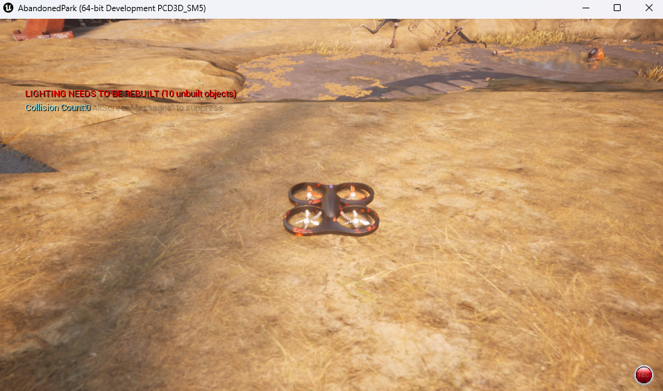
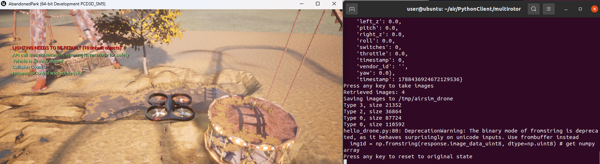

配置 AirSim Python 客户端环境并连接模拟器
本文介绍如何搭建 AirSim Python 客户端环境并连上 AbandonedPark 模拟器，是建立虚拟机和空域载具之间的连接的前置步骤。
1. 先分清命令在哪里执行
连接过程是「Windows 上的模拟器」与「运行 Python 客户端的环境」通过 TCP 通信，很多失败其实是命令敲在了错误的终端里。
| 步骤 | 执行位置 |
|---|---|
启动 AbandonedPark.exe 模拟器 |
Windows（双击 exe 或 CMD） |
安装 Python 客户端、运行 hello_drone.py |
Windows 本机或 WSL2 的 Ubuntu |
| 安装 WSL2、安装 Ubuntu 发行版 | Windows 的管理员 PowerShell |
| 首次启动 Ubuntu、设置 Linux 用户名和密码 | Ubuntu（WSL2）终端 |
| 安装 Miniconda、创建 conda 环境 | Ubuntu（WSL2）终端 |
用 ipconfig 查看宿主机 IP、放行 41451 端口 |
Windows 的 PowerShell / CMD |
如何判断自己在哪个环境： 执行 uname -a，输出里含 Linux 说明在 Ubuntu 里；提示符路径形如 /home/用户名 是在 Ubuntu 里，形如 C:\Users\... 则是在 Windows 里。
2. 两种方式怎么选
| Windows 本机 | WSL2 + Ubuntu | |
|---|---|---|
| 安装难度 | 低，装个 Python 即可 | 高，需要启用系统功能并重启 |
| 连接地址 | 127.0.0.1:41451 |
NAT 模式下为宿主机局域网 IP；镜像模式下可用 127.0.0.1 |
| 是否需要改防火墙 | 不需要 | 需要放行 41451 |
| 适用场景 | 只想跑通 AirSim 示例 | 需要 ROS/ROS2 与 AirSim 联合仿真 |
只想跑通 hello_drone.py 的话，直接用 Windows 本机方式即可，可以完全绕开 WSL2 的网络与权限问题。
3. 方式一：Windows 本机直连
3.1 启动模拟器
cd AbandonedPark\WindowsNoEditor\
AbandonedPark.exe
cd 需要进入你实际解压该环境包的目录。等场景加载出来（首次启动约需 30～60 秒）。
注意（实测必踩）： 启动后会弹出一个对话框：
Would you like to use car simulation? Choose no to use quadrotor simulation.
必须点「否(N)」。 点「是」进入的是汽车模拟，后面用 hello_drone.py 控制四旋翼时会连不上。选择完成后 AirSim 的 RPC 服务才开始监听 41451 端口。

3.2 安装 Python 客户端
建议使用 Python 3.8～3.11，并按顺序安装：
pip install numpy
pip install msgpack-rpc-python
pip install airsim
注意： 顺序不能颠倒。airsim 依赖 msgpack-rpc-python，而 msgpack-rpc-python 依赖 numpy，先装 airsim 容易失败。
验证安装：
python -c "import airsim; print(airsim.__version__)"
能打印版本号即安装成功。如果 confirmConnection() 时出现版本不匹配的警告，通常可以忽略，只要连接成功即可。
在较新的 Python（3.12 及以上）上安装 airsim
pip install airsim 需要从源码构建，在较新的 Python 上会遇到两个额外报错，按下面处理：
# 报错 1：构建时 ModuleNotFoundError: No module named 'numpy'
# 原因：pip 默认在隔离环境中构建，隔离环境里没有 numpy
# 报错 2：构建时 ModuleNotFoundError: No module named 'backports.ssl_match_hostname'
# 原因：msgpack-rpc-python 依赖该兼容包
pip install setuptools wheel backports.ssl-match-hostname
pip install --no-build-isolation airsim
注意： 示例脚本 hello_drone.py 中使用了 np.fromstring()，该函数在 NumPy 2.0 中已被移除，因此需要限制 NumPy 版本（Python 3.8 环境下默认装到的 NumPy 1.x 不受影响）：
pip install "numpy<2"
3.3 连接与运行示例
在 Windows 本机运行时，hello_drone.py 的 --host 默认就是 127.0.0.1，不需要修改，也不需要放行防火墙：
git clone https://github.com/OpenHUTB/air.git
cd air\PythonClient\multirotor\
python hello_drone.py
注意： hello_drone.py 中有 4 处 airsim.wait_key('Press any key to ...')，会在每一步暂停等待按键。要在无人值守或没有控制台的环境下运行（例如放到脚本里批量执行），需要把 airsim.wait_key 替换为空操作。
正常连接时输出以 Connected! 开头，并打印客户端与服务端协议版本：
Connected!
Client Ver:1 (Min Req: 1), Server Ver:1 (Min Req: 1)
hello_drone.py 的执行顺序是：读取状态与 IMU/气压计/磁力计/GPS 数据 → 起飞 → 飞到 (-10, 10, -10) → 悬停 → 抓取 4 张相机图像 → 复位。图像保存在系统临时目录的 airsim_drone 文件夹中。

3.4 用状态数据确认坐标系
AirSim 使用 NED 坐标系（+X 北、+Y 东、+Z 向下），可以通过打印位置自行验证：
import airsim
client = airsim.MultirotorClient()
client.confirmConnection()
client.enableApiControl(True)
client.armDisarm(True)
client.takeoffAsync().join() # 返回 Future，join() 才会阻塞等待完成
print(client.getMultirotorState().kinematics_estimated.position)
起飞后 z_val 会变为负数（例如 -10 表示在原点上方 10 米），这就是 +Z 向下。takeoffAsync()、moveToPositionAsync() 等方法返回的都是 Future，必须调用 .join() 才会等待动作完成。
4. 方式二：WSL2 + Ubuntu
4.1 检查当前状态
在 Windows 上按 Win 键搜索 PowerShell（或直接打开 CMD），执行：
# 列出已安装的发行版，-v 同时显示 WSL 版本
wsl --list --verbose
# 查看 WSL 整体状态、默认版本和虚拟化配置
wsl --status
# 查看 WSL 内核、WSLg 等组件版本
wsl --version
如果第一条命令输出下面的提示，说明 WSL 组件已经装好，但没有安装任何 Linux 发行版，直接看 4.2 ：
适用于 Linux 的 Windows 子系统没有已安装的分发。
可通过安装包含以下说明的分发来解决此问题：
使用“wsl.exe --list --online' ”列出可用的分发
和 “wsl.exe --install <Distro>” 进行安装。
还可以用下面这条命令查看两个必需系统功能的启用状态（不需要管理员权限，InstallState 为 1 表示已启用、2 表示未启用）：
Get-CimInstance Win32_OptionalFeature |
Where-Object { $_.Name -match 'VirtualMachinePlatform|Subsystem-Linux' } |
Select-Object Name, InstallState
WSL2 依赖 VirtualMachinePlatform，若它显示 2，说明还没启用，见 4.2。
4.2 启用并安装（必须管理员权限）
按 Win 键搜索 PowerShell，在搜索结果上右键选择以管理员身份运行，然后执行：
# 一键启用 WSL 相关功能并安装默认发行版（Ubuntu）
wsl --install
如果只想安装 Ubuntu 22.04，或者已经装好 WSL 组件、只缺发行版：
# 查看可以安装的发行版列表
wsl --list --online
# 安装指定的发行版
wsl --install -d Ubuntu-22.04
注意（实测必踩）： 一定要在管理员 PowerShell 里执行。在普通权限的终端里执行 wsl --install 同样会打印"请求的操作成功"之类的成功提示，但实际上什么都不会启用，重启也没用。如果 wsl --status 提示「WSL2 无法启动，因为此计算机上未启用虚拟化」，用管理员权限执行：
wsl --install --no-distribution
或者用 DISM 直接启用（返回 3010 表示需要重启）：
dism.exe /online /enable-feature /featurename:VirtualMachinePlatform /all /norestart
dism.exe /online /enable-feature /featurename:Microsoft-Windows-Subsystem-Linux /all /norestart
注意： 启用功能后必须重启 Windows 才会生效。如果重启后功能状态又变回未启用（InstallState 为 2），说明开机时的组件安装被回滚了，可在 C:\Windows\Logs\CBS\CBS.log 中查找 Startup: Failed to process advanced operation queue 与 0x800f0922（CBS_E_INSTALLERS_FAILED）。这类失败通常由第三方网络组件（虚拟网卡、VPN、安全软件的网络过滤驱动）引起，常见的报错是 NetSetupAI.dll 的 0x8007007e；需要先排查这些组件再重试，否则每次开机会反复回滚。
关于 CPU 虚拟化： Get-CimInstance Win32_Processor 的 VirtualizationFirmwareEnabled 在 Hyper-V / 虚拟化安全（VBS）已运行时会误报为 False，不能以此判断 BIOS 里没开虚拟化。用 systeminfo 看到 A hypervisor has been detected 就说明固件虚拟化已经开启。
4.3 首次启动 Ubuntu
重启后，从开始菜单打开 Ubuntu（或在 CMD/PowerShell 里执行 wsl），第一次启动会要求创建 Linux 用户：
Installing, this may take a few minutes...
Please create a default UNIX user account.
Enter new UNIX username: <输入用户名，例如 hutb>
New password: <输入密码>
Retype new password: <再次输入密码>
注意： Linux 下输入密码时屏幕上不会有任何显示，这是正常现象，直接输完回车即可。
4.4 验证安装结果
在 Ubuntu 终端里确认自己处于 Linux 环境：
uname -a
回到 Windows 的 PowerShell 确认发行版和版本号：
wsl -l -v
正常输出类似：
NAME STATE VERSION
* Ubuntu-22.04 Running 2
只要 VERSION 一列是 2，就说明 WSL2 已经装好。
4.5 安装过程中的常见报错
| 报错信息 | 原因与解决办法 |
|---|---|
wsl 不是内部或外部命令 |
尚未安装 WSL，用管理员 PowerShell 执行 wsl --install；该系统要求 Windows 10 2004 及以上版本 |
| 没有已安装的分发 | WSL 组件正常但缺少发行版，执行 wsl --install -d Ubuntu-22.04，重启后再次执行 |
| 提示需要开启「虚拟机平台」 | 用管理员 PowerShell 执行 wsl --install --no-distribution，或参考 4.2 中的 dism 命令，然后重启 |
| 重启后功能状态又变回未启用 | 开机时组件安装被回滚，见 4.2 中关于 0x800f0922 的说明 |
| 提示当前计算机配置不支持 WSL2 | 需要在 BIOS 中开启 CPU 虚拟化（Intel VT-x / AMD-V），参考 https://aka.ms/enablevirtualization |
| 提示 WSL2 内核需要更新 | 下载并安装 WSL2 Linux 内核更新包 |
wsl --install 卡在下载 Ubuntu |
网络问题，可以打开 Microsoft Store 搜索 Ubuntu 手动安装 |
5. 在 Ubuntu 中安装 Miniconda 与虚拟环境
以下命令都在 Ubuntu 终端中执行：
# 切换到主目录
cd ~
# 下载 miniconda 安装包
wget https://repo.anaconda.com/miniconda/Miniconda3-latest-Linux-x86_64.sh
# 默认路径安装（用户主目录下）
bash Miniconda3-latest-Linux-x86_64.sh -b
# 将 miniconda 添加到 PATH（必须写 $HOME：双引号内的 ~ 不会被 bash 展开）
echo 'export PATH="$HOME/miniconda3/bin:$PATH"' >> ~/.bashrc && source ~/.bashrc
# 验证安装，输出 conda 版本号即成功
conda --version
注意： 这里必须写 $HOME/miniconda3/bin，不能写成 ~/miniconda3/bin。Bash 不会在双引号内展开 ~，写成 export PATH="~/miniconda3/bin:$PATH" 时 ~ 会被当成普通字符写进 PATH，之后执行 conda --version 会提示找不到命令。上面的 echo 用的是单引号，$HOME 会原样写入 .bashrc，等每次启动 shell 时再展开。
创建示例使用的 Python 3.8 虚拟环境：
# 初始化 conda，让 shell 认识 conda activate 这个函数
conda init bash
# 重新加载配置使初始化生效
source ~/.bashrc
conda create -n nn_3.8 python=3.8 -y
conda activate nn_3.8
注意： 如果 conda create 报 CondaToSNonInteractiveError: Terms of Service have not been accepted for the following channels.，说明没有接受服务条款，逐条接受即可：
conda tos accept --override-channels --channel https://repo.anaconda.com/pkgs/main
conda tos accept --override-channels --channel https://repo.anaconda.com/pkgs/r
也可以一次性设置环境变量，之后 conda 操作不会再被中断：
export CONDA_PLUGINS_AUTO_ACCEPT_TOS=yes
创建并激活成功后，命令行提示符前会出现 (nn_3.8)。关于 conda activate 报 Run 'conda init' before 'conda activate' 的原因，见建立虚拟机和空域载具之间的连接。
6. 让 WSL2 连上 Windows 上的模拟器
WSL2 默认使用 NAT 网络模式，此时客户端不能像 3.3 那样直接用 127.0.0.1，需要改用 Windows 宿主机的局域网 IP；如果启用了镜像网络模式（mirrored），localhost 则可以直接使用，两种模式的判断与配置见 6.1。
6.1 查询 Windows 宿主机 IP
在 Windows 的 CMD/PowerShell 中执行：
ipconfig
在「无线局域网适配器 WLAN」或「以太网适配器」下找到 IPv4 地址，例如 172.21.108.47，这就是后续 --host 要填写的地址。
注意（仅适用于 NAT 模式）： 在默认的 NAT 网络模式下，WSL2 有自己独立的虚拟网络，localhost 和 127.0.0.1 指向的是 WSL2 自己，不是 Windows 宿主机，因此连接宿主机上的模拟器必须使用上面查到的 Windows 局域网 IP。
镜像网络模式（mirrored）下不受此限制。 WSL 2.0 及以上版本在 Windows 11 22H2 及以上支持镜像网络，开启后 WSL2 直接复用 Windows 的网络接口，localhost 即可访问宿主机上的服务，不必再查询 IP。可以在 %USERPROFILE%\.wslconfig 中启用：
[wsl2]
networkingMode=mirrored
保存后执行 wsl --shutdown 退出所有发行版，重新进入即生效。也可以进入 Ubuntu 后用 ip addr 判断当前模式：若看到的网卡名称与 Windows 上的一致（例如 WLAN、以太网），说明已经处于镜像模式；若只有 eth0 之类的虚拟网卡，则是 NAT 模式。
6.2 放行 41451 端口
如果连接持续失败，先检查 Windows 防火墙是否拦截了入站连接。可以先临时关闭防火墙验证是否为防火墙问题，确认后用管理员 PowerShell 添加放行规则：
New-NetFirewallRule -DisplayName "AirSim RPC 41451" -Direction Inbound -Protocol TCP -LocalPort 41451 -Action Allow
6.3 运行示例程序
在 Ubuntu 中确认模拟器已在 Windows 上启动并已选择四旋翼（见 3.1），然后执行：
cd air/PythonClient/multirotor/
# --host 后替换为 6.1 中查到的 Windows 宿主机 IP
python hello_drone.py --host 172.21.108.47
7. 常见问题
7.1 报错 Retry connection over the limit
这是 WSL2 连接 AirSim 时最常见的报错，按下面顺序排查：
- 若 WSL2 处于 NAT 模式，确认使用的是 Windows 宿主机 IP，而不是
localhost或127.0.0.1；镜像模式下两者都可以（见 6.1）； - 确认模拟器窗口已经打开、场景加载完毕，并且已在选择载具对话框中选择「否」（见 3.1）；
- 确认 Windows 防火墙放行了
41451端口（见 6.2）； - 确认模拟器确实在监听：
Get-NetTCPConnection -State Listen -LocalPort 41451； - 在客户端环境里执行
python -c "import airsim; print(airsim.__version__)"，确认客户端安装正确。
7.2 settings.json 的位置
AirSim 会从下面两个位置读取配置文件：
- Windows：
%USERPROFILE%\Documents\AirSim\settings.json - Linux / WSL2：
~/Documents/AirSim/settings.json
多无人机场景需要在该文件里定义 Vehicles 字段。
7.3 坐标系与异步方法
- AirSim 使用 NED 坐标系（+X 北、+Y 东、+Z 向下），控制无人机向"上方"飞行时 Z 应为负数（见 3.4）；
takeoffAsync()、moveToPositionAsync()等方法返回的是 Future，需要调用.join()才会阻塞等待动作完成。